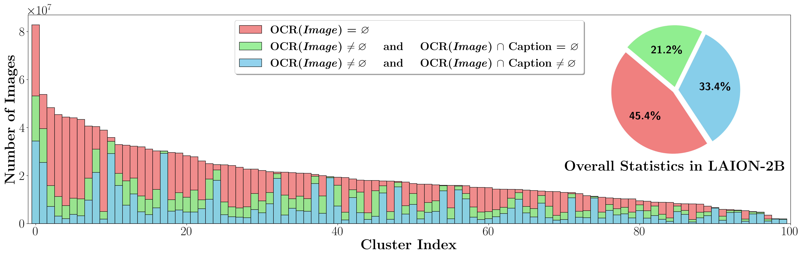
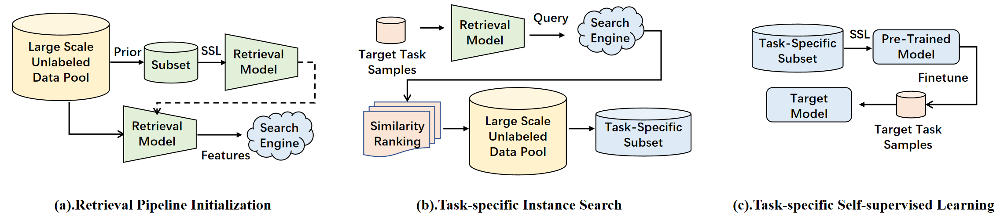

|
Yiqi Lin
I'm a researcher at Shanghai AI Lab working on data-centric research.
Before that I obtained bachelor and master degree at Sun Yat-Sen University (SYSU).
Email /
Scholar /
Github
|
|

|
Parrot Captions Teach CLIP to Spot Text
Yiqi Lin*,
Conghui He*,
Alex Jinpeng Wang*,
Bin Wang*,
Weijia Li,
Mike Zheng Shou
arXiv, 2023
project page
/
code
We found that 50% of LAION-2B samples contain the Parrot Captions (concurent text in captions and print pixels)
and the Parrot Captions do huge impact on CLIP-style Vision-Language Alignment.
|
|

|
SEPT: Towards Scalable and Efficient Visual Pre-Training
Yiqi Lin,Huabin Zheng, Huaping Zhong,
Jinjing Zhu,
Weijia Li,
Conghui He,
Lin Wang
AAAI, 2023
A task-driven self-supervised pre-training framework achieves ImageNet-like performance using 1/10 unlabeled samples.
|
|
|
MMFewShot: OpenMMLab FewShot Learning Toolbox and Benchmark
project page
MMFewShot supports few-shot classification and object detection pipelines and sets up a few-shot benchmark under fair evaluation.
|
|